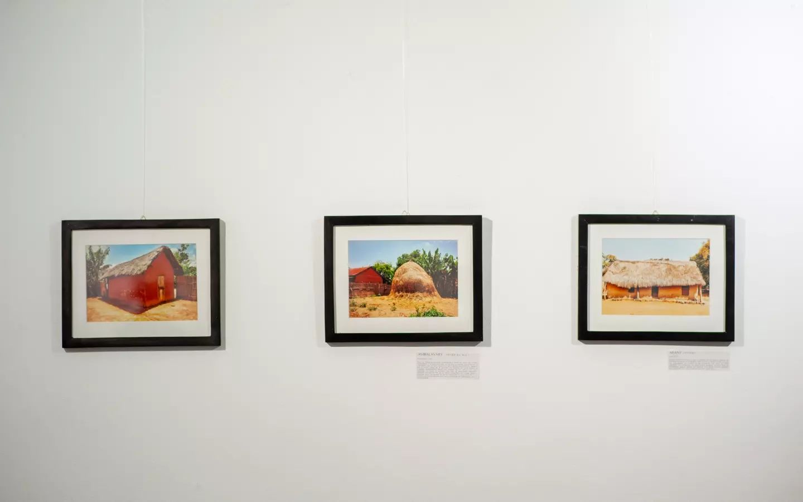
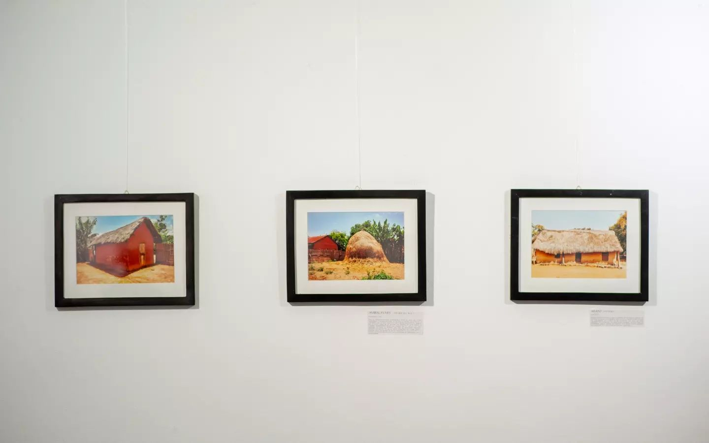
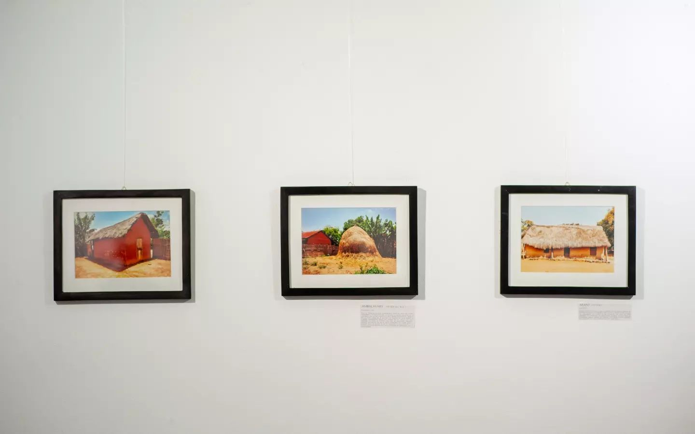

Hello helloüôå
Je suis Hagani Sainana, et je suis passionnée par l'art, plus précisément par la photographie, le dessin et la peinture.
Sur cette page, vous découvrirez mes créations, mes inspirations ainsi que mes programmes artistiques.
N’hésitez pas à interagir si vous aimez ce que vous voyez. Votre soutien est précieux et m’encourage à continuer cette aventure.
J’espère que mes œuvres vous toucheront et vous inspireront autant que j’ai pris plaisir à les créer.
Bienvenue sur la page. ✨
"Tsirika : un regard contemplatif face à la diversité de la vie",
l'exposition de l'artiste Hagani Sainana qui raconte à travers ses photographies, sa passion pour le voyage, les paysages et l'être humain.
Des clichés en couleur ou en noir et blanc partageant son désir profond de préserver la nature tout en la célébrant.
Rattachée à la terre, elle présente en parallèle des illustrations réalisées à partir de "tanimanga", "tanimena" et "mololo."
Voici quelques images lors de l'exposition Tsirika
